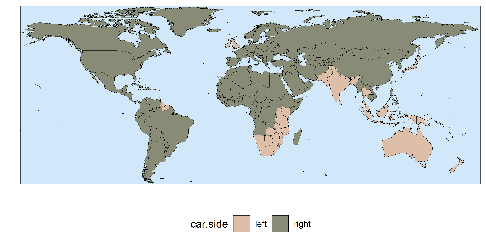

countries is an R package designed to quickly wrangle, merge and explore country data. This package contains functions to easily identify and convert country names, pull country info and datasets, merge country data from different sources, and easily make world maps.
Installing and loading the package
The package can be installed from CRAN.
# Install package from CRAN
install.packages("countries")
# load package
library(countries)Alternatively, the development version can be downloaded directly from the Github repository. This can be done with the devtools package.
# Install and load devtools
install.packages("devtools")
library(devtools)
# Install countries
devtools::install_github("fbellelli/countries", build_vignettes = TRUE)
# load package
library(countries)Dealing with country names
The package contains several functions to work with country names. For instance, the function country_name() can be used to convert country names to different naming conventions or to translate them to different languages. country_name() can identify countries even when they are provided in mixed formats or in different languages. It is robust to small misspellings and recognises many alternative country names and old nomenclatures. Learn more about how to deal with country names in this article.
example <- c("US","C@ète d^Ivoire", "Morocco","FYROM", "Arabie Saoudite")
# Getting 3-letters ISO code
country_name(x= example, to="ISO3")
#> [1] "USA" "CIV" "MAR" "MKD" "SAU"
# Translating to spanish
country_name(x= example, to="name_es")
#> [1] "Estados Unidos" "Costa de Marfil" "Marruecos"
#> [4] "Macedonia del Norte" "Arabia Saudita"
# Getting multiple nomenclatures
country_name(x= example, to=c("ISO3","ISO2","UN_en"))
#> ISO3 ISO2 UN_en
#> 1 USA US United States of America
#> 2 CIV CI Côte d’Ivoire
#> 3 MAR MA Morocco
#> 4 MKD MK North Macedonia
#> 5 SAU SA Saudi ArabiaThe function is_country() can be used to test for country names or subsets of countries:
#Detect strings that are country names
is_country(x = c("ITA","Estados Unidos","bungalow","dog",542))
#> [1] TRUE TRUE FALSE FALSE FALSE
#Checking for a specific subset of countries
is_country(x = c("Ceylon","LKA","Indonesia","Inde"), check_for = c("India","Sri Lanka"))
#> [1] TRUE TRUE FALSE TRUEThe functions list_countries() and random_countries() allow to get a list of country names. The former will return a list of ALL countries, while the second provides n randomly picked countries.
# Get 5 random country names in different languages/nomenclatures
random_countries(5)
#> [1] "Sweden" "Macao" "Iceland" "Egypt" "Ecuador"
random_countries(5, nomenclature = "ISO3")
#> [1] "CZE" "GBR" "URY" "MAC" "PAK"
random_countries(5, nomenclature = "name_ar")
#> [1] "قطر" "الصحراء الغربية" "نيوزيلندا" "سريلانكا"
#> [5] "جمهورية الكونغو"Getting information about countries
country_info() allows to download a variety of information about countries from REST Countries API, such as: currencies used, capital city, language spoken, flag, neighbouring countries, and much more. You can find more information about this function in the documentation.
# What are the official languages of Switzerland?
country_info("Switzerland", "languages")
#> Warning in country_info("Switzerland", "languages"): Unable to connect to API.
#> There might be a problem with Countries REST API.
#> NULL
# Get information on the capital name and currencies for multiple countries
country_info(c("Canada", "Mozambique", "India"), c("capital", "currencies"))
#> countries capital currencies.name currencies.symbol
#> 1 Canada Ottawa Canadian dollar $
#> 2 Mozambique Maputo Mozambican metical MT
#> 3 India New Delhi Indian rupee ₹Easy country maps
With quick_map(), it takes only one line of code to produce chloropleth maps. It automatically recognises country names in multiple languages and nomenclatures. This allows to produce publication-grade maps in seconds. Moreover, the output is a ggplot object, so the visual look can be customised in infinite ways. You can find more examples in this article.
# downloading some sample data to plot
example_data <- country_info(fields = c("car"))
# make a map
quick_map(example_data, plot_col = "car.side")
Merging country data
The function auto_merge() simplifies the merging of country data tables by: 1) allowing merging of 2+ tables at the same time, 2) Supporting automatic detection of columns to merge, 3) automatically handling different country naming conventions and date formats, 4) automatic pivoting of country names or years in tables’ headers. Learn more about country names functions in this article.
# Let's create 4 tables with different formats and country names
tab1 <- data.frame(country = c("Italy", "Pakistan", "Brazil"), world_cups = c(4, 0, 5))
tab2 <- data.frame(exporter = c("DEU", "DEU", "ITA", "ITA"), HS_chapter = c(9, 85, 9, 85), volume = c(800, 5000, 1000, 2000))
tab3 <- data.frame(HS = c(9, 85), Description = c("Coffee, tea and mate", "Electrical machinery"))
tab4 <- data.frame(year = c(2010, 2011), Allemagne = runif(2), Brésil = runif(2), Pakistan = runif(2))
# These tables can easily be merged with one line of code:
auto_merge(tab1, tab2, tab3, tab4)
#> Identifying columns to merge
#> Table 4 - countries detected in column names, pivoting columns: Allemagne, Brésil, Pakistan
#> Converting country names
#> Checking time columns
#> The following columns are being merged:
#>
#> ======= ======================= ==== ==========
#> \ country time HS_chapter
#> ======= ======================= ==== ==========
#> Table 1 country
#> Table 2 exporter HS_chapter
#> Table 3 HS
#> Table 4 Table4_pivoted_colnames year
#> ======= ======================= ==== ==========
#> Performing merge: 1/3 Performing merge: 3/3 Performing merge: 2/3 Merge complete
#> (Set merging_info to TRUE to save merging details)
#> country world_cups HS_chapter volume time Table4_pivoted_values
#> 1 ITA 4 9 1000 NA NA
#> 2 ITA 4 85 2000 NA NA
#> 3 PAK 0 NA NA 2010 0.9852906
#> 4 PAK 0 NA NA 2011 0.6920557
#> 5 BRA 5 NA NA 2010 0.9409735
#> 6 BRA 5 NA NA 2011 0.8452781
#> 7 DEU NA 9 800 2010 0.5690862
#> 8 DEU NA 9 800 2011 0.8562227
#> 9 DEU NA 85 5000 2010 0.5690862
#> 10 DEU NA 85 5000 2011 0.8562227
#> Description
#> 1 Coffee, tea and mate
#> 2 Electrical machinery
#> 3 <NA>
#> 4 <NA>
#> 5 <NA>
#> 6 <NA>
#> 7 Coffee, tea and mate
#> 8 Coffee, tea and mate
#> 9 Electrical machinery
#> 10 Electrical machinery